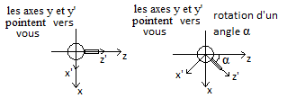
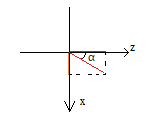
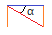

Dans cette activité nous allons nous intéresser à l'interaction "utilisateur-machine". Pour assurer cette interaction, JavaScript met à notre disposition les "listeners". Ces "listeners", vont "écouter" (ou plutôt surveiller) les périphériques d'entrées (clavier et souris par exemple).
our mettre en place un listener, nous utiliserons la méthode "addEventListener" de l'objet "window" (l'objet "window" est l'objet de base en JavaScript, tous les autres objets descendent de l'objet "window" ). La méthode "addEventListener" prend 2 paramètres :
Qu'est-ce qu’une fonction de callback ?
Une fonction de callback est une fonction qui sera exécutée seulement après un « événement » donné, pas avant. Souvent, les fonctions de callback sont des fonctions anonymes. La fonction de callback passée en paramètre de la méthode "addEventListener" sera exécutée seulement quand l'événement surveillé par le listener sera déclenché (appui sur une touche du clavier, clic de souris....)
Voici quelques événements qu'il est possible de surveiller grâce au listener :
Voici un exemple d'utilisation de "addEventListener" :
window.addEventListener ("click", function(){
//***fonction de callback ici****
}) ;
Écrire un programme qui, grâce à la méthode "alert" (fenêtre surgissante), affichera à l'écran "Hello World !" en cas de "simple clic" sur le bouton gauche de la souris.
La fonction de callback peut prendre un paramètre que l'on nomme souvent "event". Ce paramètre est un objet qui contient des informations sur l'événement qui vient d'être déclenché.
Par exemple, il est possible, en cas d'utilisation des événements "keydown", "keyup" et "keypress" de connaître le code de la touche du clavier qui a été actionnée par l'utilisateur avec "event.keyCode" :
window.addEventListener ("keydown", function(event){
alert (event.keyCode)
}) ;
Pour connaître les valeurs des codes des touches, consultez cette page (voir le paragraphe "3.3. Key CodeValues") : ici
Écrire un programme qui affichera (méthode "alert") : "touche A" si vous appuyez sur la touche A et "autre touche que la touche A" si vous appuyez sur une autre touche que la touche A.
Voici une méthode qui va vous permettre de programmer l'utilisation des touches, cette méthode est une méthode parmi beaucoup d'autres, n'hésitez pas à en changer si elle ne vous convient pas.
Créer une nouvelle application (app_16)
script.js
var keys={left:0,right:0}
window.addEventListener('keydown',function(event){
if (event.keyCode==37){
keys.left=1;
}
if (event.keyCode==39){
keys.right=1;
}
});
window.addEventListener('keyup',function(event){
if (event.keyCode==37){
keys.left=0;
}
if (event.keyCode==39){
keys.right=0;
}
});
var canvas = document.getElementById("renderCanvas");
var engine = new BABYLON.Engine(canvas, true);
var scene = new BABYLON.Scene(engine);
var camera = new BABYLON.ArcRotateCamera("Camera",0, Math.PI/4, 15, new BABYLON.Vector3(0, 0, 0), scene);
var light = new BABYLON.HemisphericLight("Hemi", new BABYLON.Vector3(0, 1, 1), scene);
var boite= new BABYLON.Mesh.CreateBox("box_1",2,scene);
function animation(){
if (keys.left==1){
boite.rotation.y=boite.rotation.y+0.05;
}
if (keys.right==1){
boite.rotation.y=boite.rotation.y-0.05;
}
}
engine.runRenderLoop(function () {
animation();
scene.render();
});
Analyser et tester cette application. Pourquoi, d'après vous, nous n'utilisons pas la variable temps dans ce cas ?
Dans l'application app_16 nous créons un objet "keys" (2 attributs "left" et "right"). Si l'utilisateur appuie (sans la relâcher) sur la flèche gauche, l'attribut keys.left prend la valeur 1. Si l'utilisateur relâche cette touche, nous avons alors keys.left=0.
Créer une nouvelle application (app_17)
Ecrire un programme permettant d'afficher un cube. En cas d'appui sur la touche Entrée (keyCode 13), le cube devra se mettre en rotation. Un nouvel appui sur la touche Entrée arrêtera la rotation.
Attention : Ce "À faire vous-même" est plus difficile qu'il n'y parait
Il est possible de détecter les clics de souris sur les objets présents à l'écran. Le listener doit avoir la structure suivante :
window.addEventListener('click',function(event){
var pickResult=scene.pick(event.clientX, event.clientY);
});
"pickResult" est un objet contenant des informations sur le mesh qui a "subi" le clic de souris :
Créer une nouvelle application (app_17)
script.js
var rotCube=0;
window.addEventListener('click',function(event){
var pickResult=scene.pick(event.clientX, event.clientY);
if (pickResult.hit){
if (rotCube==0){
rotCube=1;
}
else{
rotCube=0
}
}
});
var canvas = document.getElementById("renderCanvas");
var engine = new BABYLON.Engine(canvas, true);
var scene = new BABYLON.Scene(engine);
var camera = new BABYLON.ArcRotateCamera("Camera",0, Math.PI/4, 50, new BABYLON.Vector3(0, 0, 0), scene);
var light = new BABYLON.HemisphericLight("hemi", new BABYLON.Vector3(0, 1, 1), scene);
var boite= new BABYLON.Mesh.CreateBox("box_1",2,scene);
function animation(){
boite.rotation.y=boite.rotation.y+rotCube*0.05;
}
engine.runRenderLoop(function () {
animation();
scene.render();
});
Analyser et tester cette application.
Créer une nouvelle application (app_18)
app_18 permet d'afficher 5 cubes en rotation
script.js
var rotCube=0;
var tabBoite=[];
var canvas = document.getElementById("renderCanvas");
var engine = new BABYLON.Engine(canvas, true);
var scene = new BABYLON.Scene(engine);
var camera = new BABYLON.ArcRotateCamera("Camera",0, Math.PI/4, 50, new BABYLON.Vector3(0, 0, 0), scene);
var light = new BABYLON.HemisphericLight("hemi", new BABYLON.Vector3(0, 1, 1), scene);
//mise en place des 5 cubes
for (i=0; i<5; i++){
var boite= new BABYLON.Mesh.CreateBox("box",2,scene);
boite.position.z=-5+i*5
tabBoite.push(boite);
}
function animation(){
for (i=0; i<5; i++){
tabBoite[i].rotation.y=tabBoite[i].rotation.y+0.05
}
}
engine.runRenderLoop(function () {
animation();
scene.render();
});
Analyser et tester cette application.
Analyse de l'app_18 :
Créer une nouvelle application (app_19)
Après avoir bien compris l'app 18, modifier cette dernière afin qu'un clic de souris sur un cube provoque sa mise en rotation (un second clic provoquant son arrêt). Bien évidemment , les 5 cubes devront être indépendants les uns des autres.
Pour vous aider :
Créer une nouvelle application (app_20)
Voici les différents "éléments" que votre scène devra incorporer :
Les flèches "gauche" et "droite" permettront au "tank" d'effectuer une rotation sur lui même. La flèche "haut" permettra au tank d'avancer (toujours avec le canon vers l'avant).
Pour vous aider :
le "tank" est composé de 2 cylindres.
N'oubliez pas qu'il existe 2 types de repère : le repère global O,x,y,z (associé à la scène) et le repère local O',x',y',z' (associé au "tank" : il se déplacera en même temps que le tank). Il est très important de réaliser que le repère local tournera en même temps que le "tank" (le canon du "tank" sera toujours confondu avec l'axe z' (mais pas avec l'axe z)).
tank vue du dessus
Après la rotation d'un angle α, l'utilisateur appuie sur la flèche "haut", les coordonnées du "tank" (dans le repère global O,x,y,z) vont donc devoir être modifiées, mais comment ?
Nous allons devoir faire un peu de trigonométrie.
J'espère que vous avez remarqué que nous avons un triangle rectangle : la ligne rouge est l'hypoténuse, la ligne bleue est le côté adjacent et le côté orange est le côté opposé. Donc :
cos α = ligne bleue / ligne rouge et sin α = ligne orange/ligne rouge
donc si le tank avance de 1 (ligne rouge) alors la coordonnée z devra augmenter de cos α et la coordonnée x de sin α
Évidemment, quelque soit la position du tank et quelques soit l'angle α (dans BabylonJS : tank.rotation.y), ce raisonnement est valable.
Comment cela va se traduire dans BabylonJS ?
Partons du principe qu'en cas d'appui sur le "flèche haut", à chaque image, le tank avance de 1. À chaque image il faudra donc modifier les coordonnées (globales) comme suit :
tank.position.x = tank.position.x+Math.sin(tank.rotation.y)
tank.position.z = tank.position.z+Math.cos(tank.rotation.y)
Il reste beaucoup de choses à apprendre sur l'utilisation de BabylonJS, voici quelques liens "pour aller plus loin" :